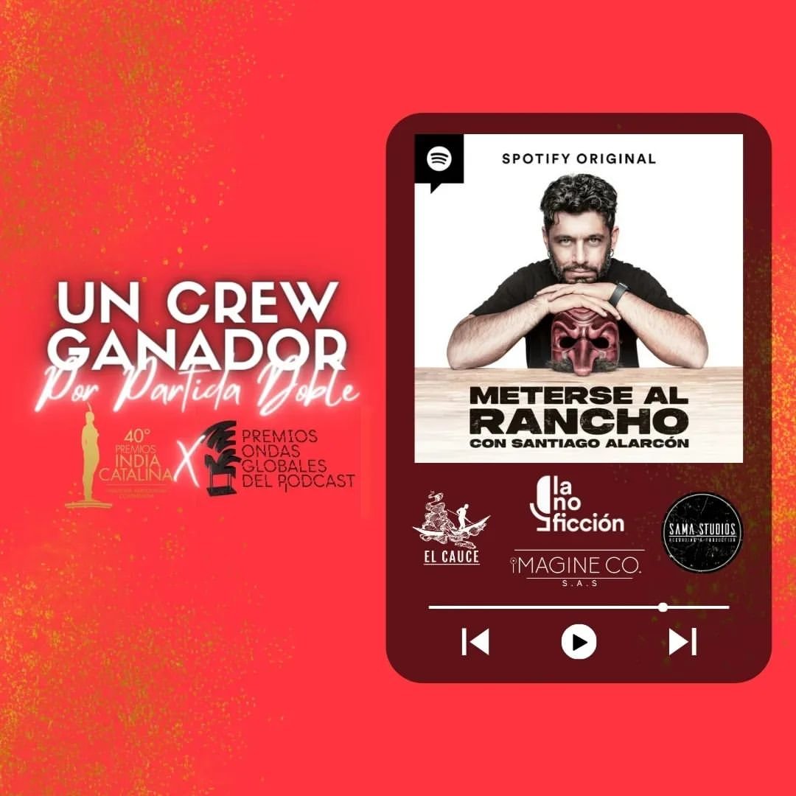
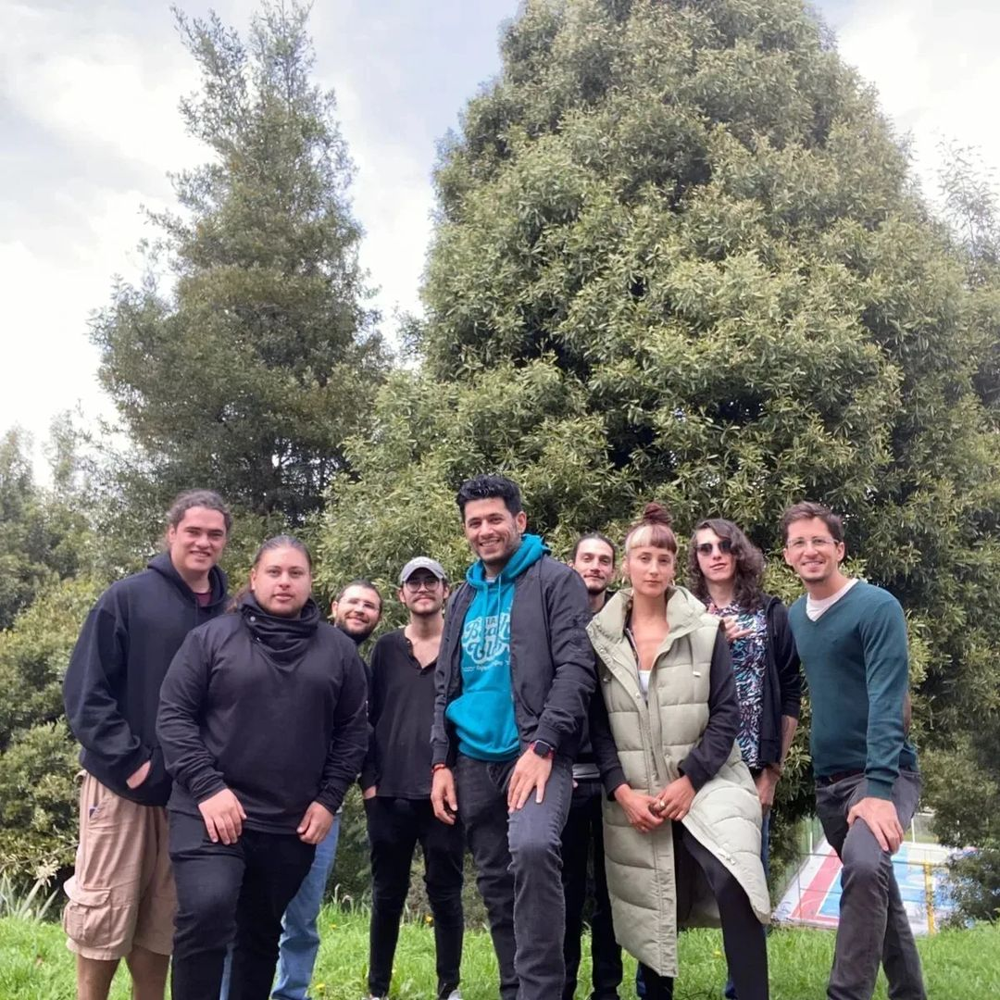
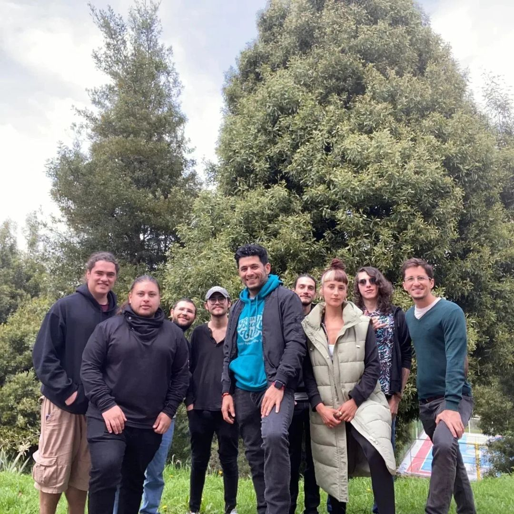
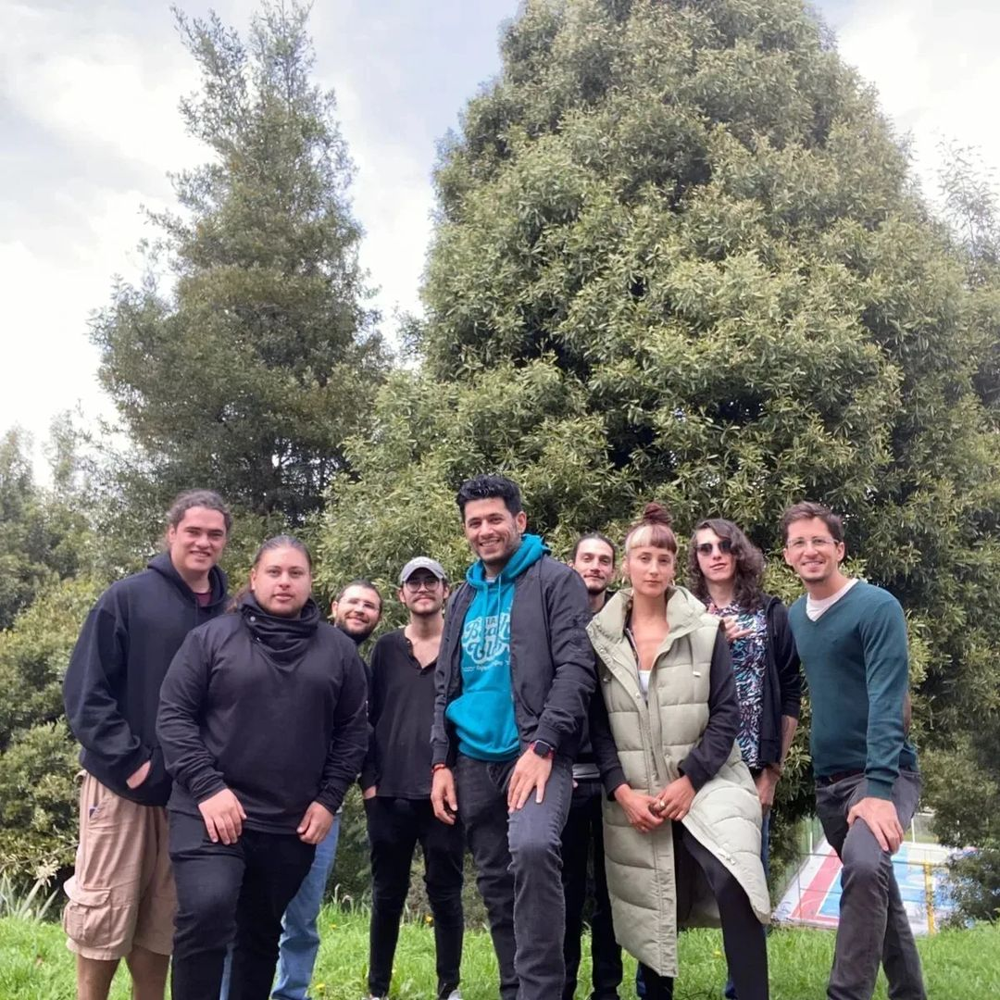

Somos CI Group, ganadores del premio India Catalina en el 2024 a mejor podcast por la producción "Meterse Al Rancho", un grupo líder en entretenimiento, producción audiovisual y publicidad en Latinoamérica integrado por cuatro destacadas compañías del sector. Con una trayectoria de más de una década y una de las infraestructuras más robustas de la región, contamos con personal altamente especializado y el mejor diseño de experiencia comercial en Colombia. Ofrecemos a nuestros clientes soluciones integrales que nos distinguen por su enfoque estratégico y creativo, donde la calidad, la eficiencia y la innovación son los pilares fundamentales de nuestros servicios y productos.

 


Te invitamos a conocer y unirte a nuestro proyecto: Neon Sessions.